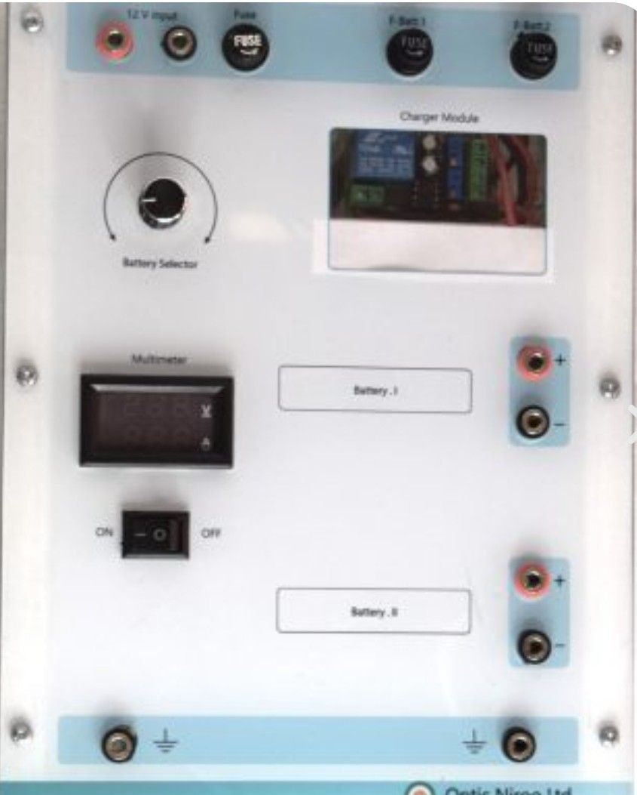

| نام تابلو: تابلو 05: باتریهای سرب-اسیدی |
سال ساخت: 2025 |
| دستهبندی: تابلو |
نام شرکت سازنده: اپتیکنیرو - Optic Niroo |
| کشور سازنده: ایران |
تابلو 05 «باتریهای سرب-اسیدی lead-Acid Batteries» دربردارنده موارد زیر است:
- 1 عدد ورودی مثبت و منفی 5 V بههمراه فیوز برای تغذیه مولتیمتر (ولتمتر و آمپرمتر) DC، ماژول شارژ کنترلر باتریهای سرباسیدی و باتری سرباسیدیای که با کلید سلکتور باتریها انتخاب شده باشد
- 1 عدد مولتیمتر (ولتمتر و آمپرمتر) DC برای نشان دادن ولتاژ و جریان باتری انتخابشده
- کلید سلکتور برای انتخاب باتریای که ورودی به آن هدایت شود و مولتیمتر مشخصات آن را اندازه بگیرد
- ماژول «شارژ کنترلر Charge Controller» باتریهای سرباسیدی برای حفاظت از باتریها
- 2 عدد باتری سرباسیدی بههمراه فیوز و خروجیهای مستقل
آزمایشهایی که این تابلو در آنها به کار رفته است
- -